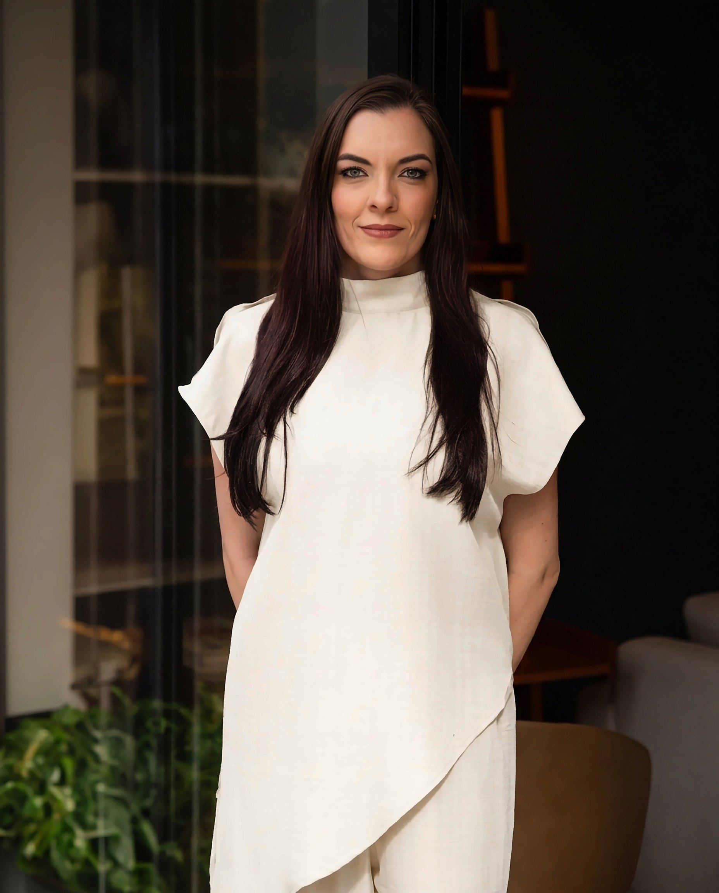
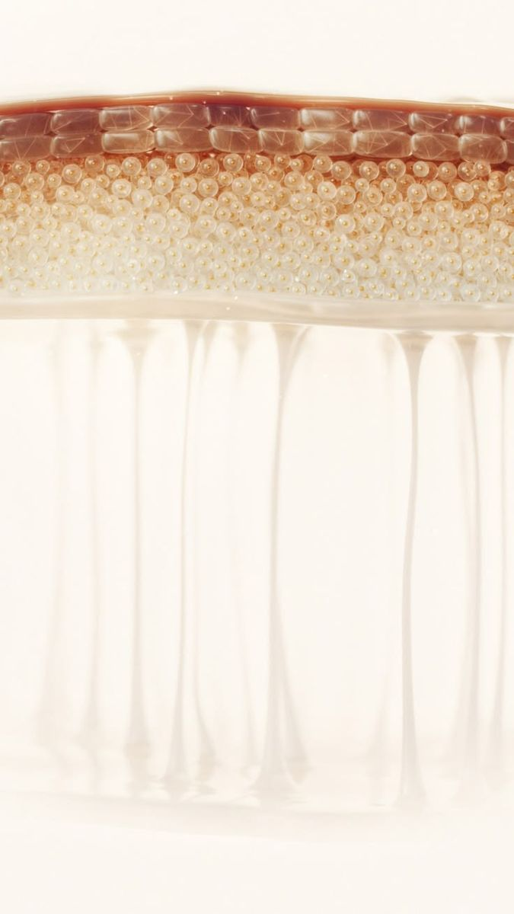
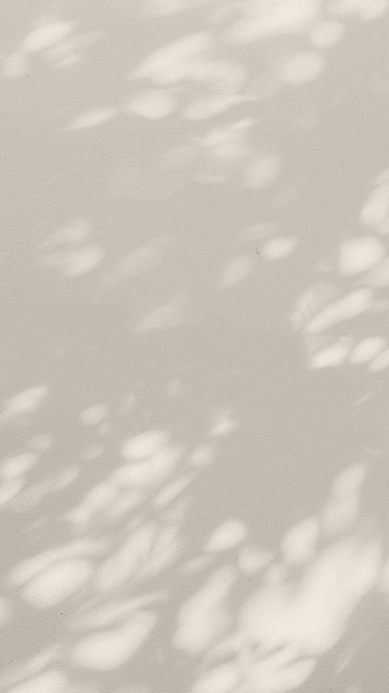
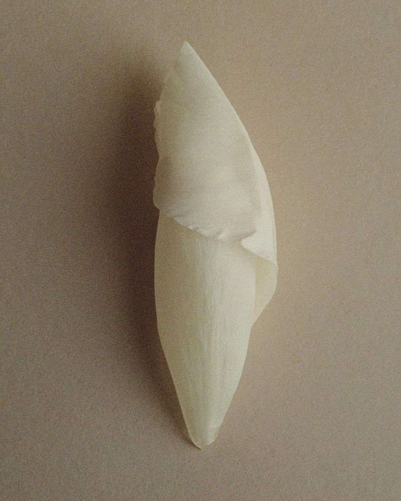
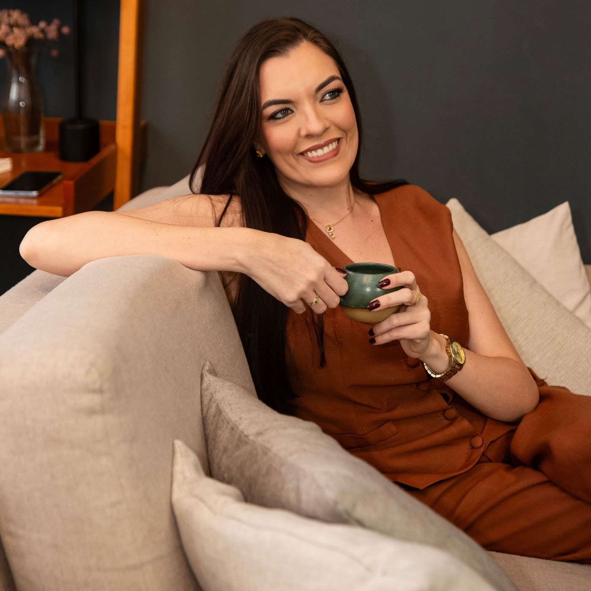

Primeiro contato
A secretária atende pelo WhatsApp e ajuda você a escolher entre consultório, convênio ou teleconsulta.

Hormônios, anticoncepção e menopausa explicados com calma, para você decidir com segurança.
Formada em Medicina pelo Centro Universitário das Américas, fez residência no Hospital da Mulher de São Bernardo do Campo e se especializa em Ginecologia Endócrina no Hospital Sírio-Libanês. São seis anos dedicados à saúde da mulher.
Na ginecologia endócrina, cuida de tudo o que os hormônios influenciam: ciclo, contracepção e menopausa. A primeira consulta dura cerca de uma hora, porque cada tratamento começa por entender a sua história, e o que as pacientes mais destacam é justamente isso: tudo explicado, nenhuma dúvida sem resposta.
Seu corpo, no seu tempo.
O que te traz até aqui? Escolha a opção que representa o seu momento.
Toque em uma das opções para começar.
Informe o primeiro dia da sua última menstruação para ver a idade gestacional, a data provável do parto e o que acontece nesta fase.
Cálculo estimado pela data da última menstruação. A idade gestacional é confirmada pelo ultrassom no pré-natal.
Escolha uma data para começar.
Arraste para a semana da sua gestação e veja o tamanho e o peso médios do bebê nessa fase.
Valores médios aproximados. Cada bebê tem o seu ritmo, e o crescimento é acompanhado pelo ultrassom.
Como o parto pode acontecer algumas semanas antes ou depois da data provável, mostramos também os signos possíveis.
Escolha uma data para descobrir.
Com a data da última menstruação e a duração média do seu ciclo, estimamos a próxima menstruação e o período fértil.
Estimativa para ciclos regulares. Não deve ser usada como método contraceptivo.
Escolha uma data para começar.
O corrimento faz parte da saúde vaginal e muda ao longo do ciclo. Escolha a opção mais parecida com o que você percebe.
Selecione uma opção para ver a orientação.
Os cuidados de rotina mudam a cada fase da vida. Escolha a sua faixa de idade para ver o que normalmente entra na conversa da consulta.
A frequência de cada exame depende do seu histórico e é definida em consulta.
Escolha sua faixa de idade.
A menopausa é um marco, mas a transição começa anos antes. Escolha a frase que mais descreve o seu momento.
Selecione uma opção.
Responda três perguntas rápidas e veja quais métodos costumam combinar com o seu momento. A escolha final é sempre feita em consulta.
Responda as três perguntas.
O medo de hormônios é uma das dúvidas mais comuns no consultório. Veja o que é mito e o que é verdade.
Marque tudo o que tem aparecido nos últimos meses. Levar esse mapa para a consulta ajuda a conversa.
Marque os sintomas que você reconhece.
A secretária atende pelo WhatsApp e ajuda você a escolher entre consultório, convênio ou teleconsulta.
Cerca de uma hora para conhecer a sua história clínica e de saúde, sem pressa, antes de qualquer conduta.

Cada exame é explicado, e o tratamento é pensado a partir da sua rotina e dos seus objetivos.

Retorno em até 60 dias incluído para avaliar exames e tratamento, e um canal aberto para as dúvidas.

Da adolescência à menopausa, a mesma médica ao seu lado em cada momento.
